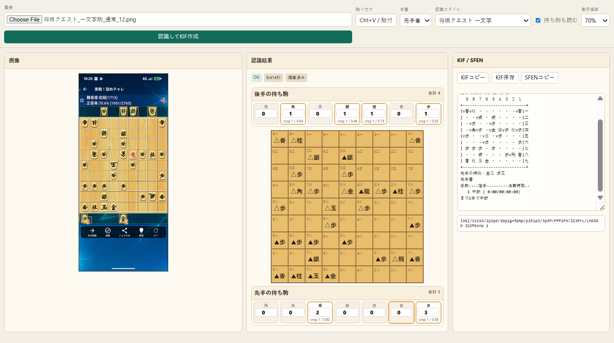

将棋クエスト KIF変換・画像認識ツール
Shogi Quest Image KIF Converter は、将棋クエストの一文字駒スクリーンショットから局面を認識し、 盤面と持ち駒を確認しながら KIF / SFEN / JSON へ変換するWindows向けの非公式ツールです。

将棋クエストの画像認識でできること
将棋クエストのスマホスクリーンショットを読み込む
盤面、先手持ち駒、後手持ち駒をHTML UIで確認する
局面をKIFまたはSFENとしてコピーする
スクリーンショットをKIF/SFENへ変換する使い方
- GitHubからZIPをダウンロードして展開します。
- 初回だけ
py -m pip install -e .を実行します。 start_kif_ui.cmdをダブルクリックしてHTML UIを開きます。- 将棋クエストのスクリーンショットを選択、またはクリップボードから貼り付けます。
- 元画像と認識結果を見比べ、問題なければKIFまたはSFENをコピーします。
HTML UIはPC内のローカルサーバーで動きます。画像を外部サーバーへアップロードする仕組みではありません。
対応範囲
- 対象アプリ: 将棋クエスト
- 駒スタイル: 一文字駒
- 入力: スマホで撮影したスクリーンショット
- 確認済み機種: Pixel 7a
他の端末、テーマ、別アプリ、トリミング済み画像は保証対象外です。KIF/SFENを他アプリへ渡す前に必ず目視確認してください。
主な用途
将棋クエストのスクリーンショットから局面を保存したいとき、将棋アプリや棋譜管理ソフトに局面を移したいとき、スマホで撮った対局画面をKIF/SFENとして確認したいときに使えます。
このツールはShogi Questの公式アプリではありません。
よくある質問
将棋クエストのスクリーンショットをKIFに変換できますか？
将棋クエストの一文字駒スクリーンショットを読み込み、盤面と持ち駒を確認しながらKIFまたはSFENに変換できます。
スマホ以外の画像にも対応していますか？
公開時点の主な対象は、スマホで撮影した将棋クエスト一文字駒のスクリーンショットです。確認済み機種はPixel 7aのみです。
KIFを他アプリに取り込む前に何を確認すればよいですか？
HTML UIで盤上の駒配置、先手の持ち駒、後手の持ち駒、手番が元画像と一致していることを確認してください。
ライセンスと注意
コードはMIT Licenseです。同梱している将棋クエストのスクリーンショット、アプリ画面、駒・盤面などの表示素材に関する権利は各権利者に帰属します。